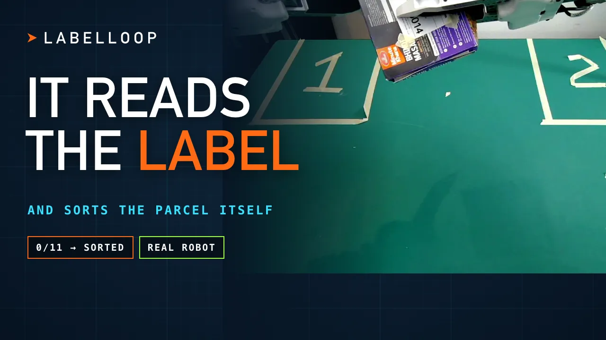
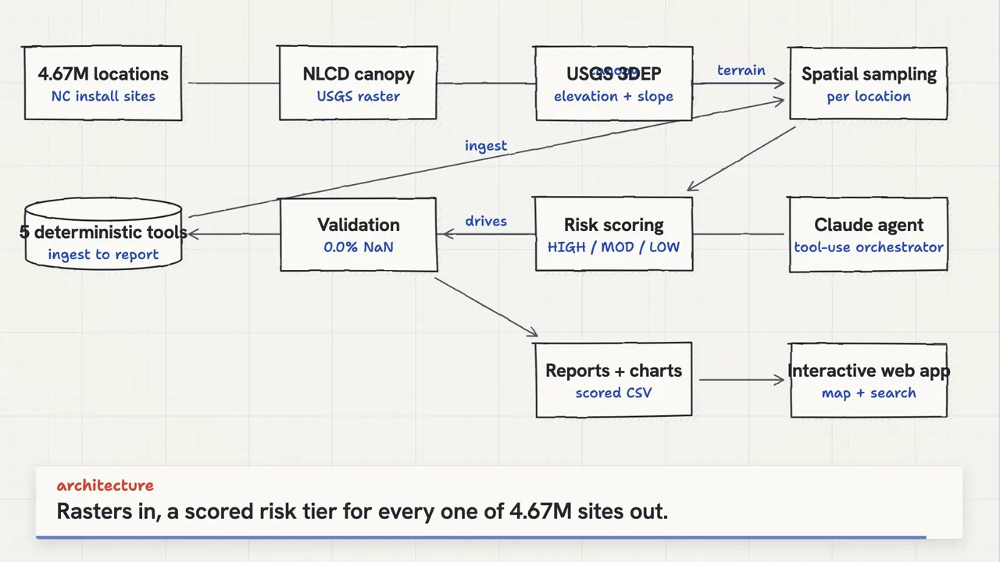
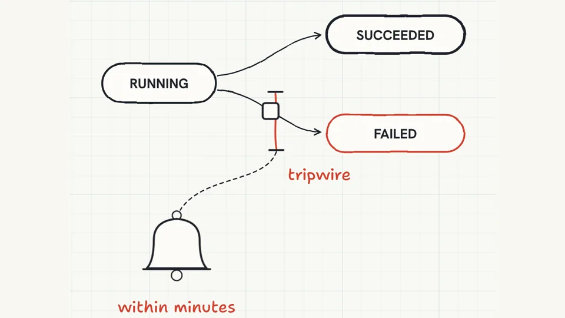
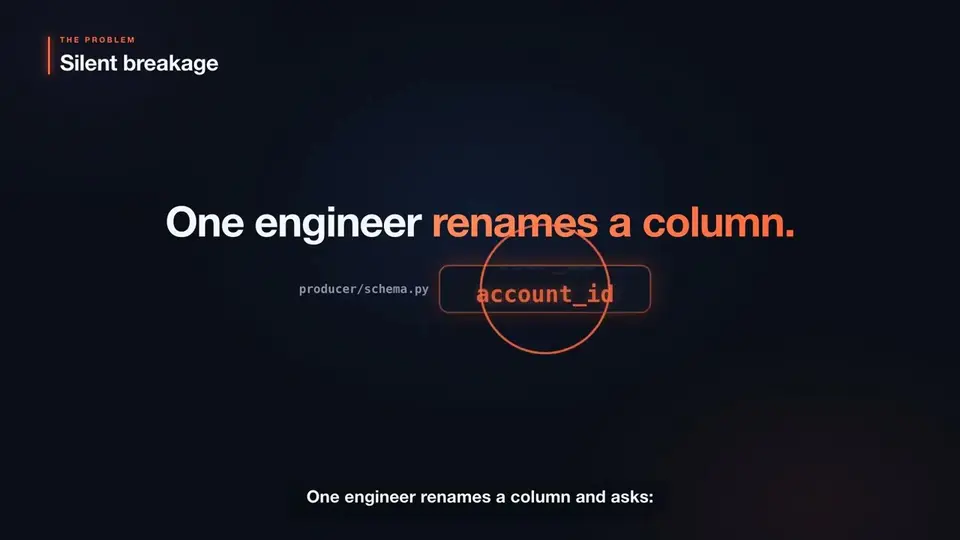
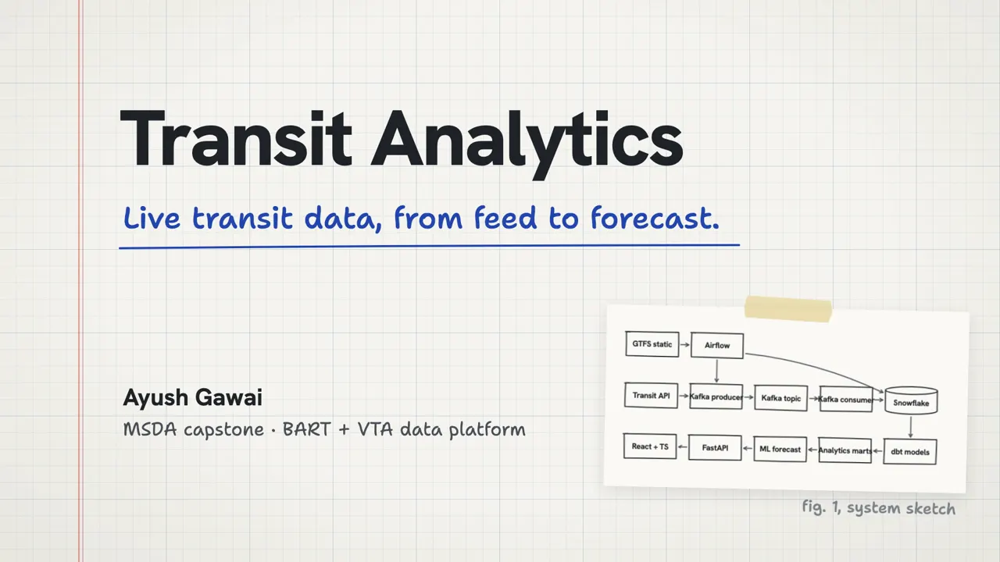

Ayush Gawai
I build data, AI and robotics systems that turn messy real-world signals into something people can trust.
Zoox Perception intern ’26 · M.S. Applied Data Science, SJSU ’27 · 4 years of data engineering
Open to 2027 full-time roles: data and AI infrastructure, ML systems, edge AI, robotics
Tools on the mobile
Use the arrow keys to move between tools; each one shows where it was used.
hello, I'm Ayush
I build systems that make messy real-world data reliable enough to act on
I spent four years as a data engineer at Zscaler and LatentView, then came to San José State for an M.S. in Applied Data Science. Last summer I was on the Perception team at Zoox, where I built the system that grades ~409 data miners against human labels. At SJSU I am a Graduate Research Assistant: I publish research on assistive AI and visual attention, and I train real robot arms with imitation learning.
I graduate in May 2027 and I'm looking for a full-time role in data and AI infrastructure, ML systems, edge AI or robotics.
featured
Projects I'm proud of
LabelLoop
A harness that gives a robot foundation model eyes and discipline. It reads shipping labels, routes each parcel by rule, finds it on a calibrated table, checks every grasp on camera and re-targets when a person moves the parcel. 163 logged trials on a real dual-arm robot.
watch the demo and read how it works →
 Hackathon winner · edge AI
Hackathon winner · edge AI
Sentinel AI
A multi-camera safety system that runs fully on a local GPU. YOLO watches every frame and a vision-language model reasons only when something looks serious. Video never leaves the building.
open the project →
Geospatial AI agentSatCheck
Will satellite internet actually work at this address? A Claude agent scores 4.67 million locations for tree and terrain obstruction.
open the project → TreeHacks · green AI
TreeHacks · green AI
CarbonShift
GPU training that follows the power grid. A 60-second control loop throttles or pauses training when electricity is dirty or expensive.
open the project →
Zoox · observabilityTripWire
Failure alerts for a fleet of ~409 data miners at Zoox. The moment a run fails, its owner gets a message with a deep link. Discovery went from days to minutes.
open the project →
Multi-agent systemBlast Radius
Rename one field upstream and see everything that breaks downstream before you merge. Three coding agents test it, open fix PRs and wait for the real owners to approve.
open the project →
Data platformTransit Analytics
Live BART and VTA feeds through Kafka, Airflow, Snowflake and dbt into a forecasting layer and an operator dashboard.
open the project →2020 to now
My route so far
A store of my own, four years building data platforms, then research, robotics and autonomous vehicles in San José. Click any stop to open its full page.
-
Feb 2020 – Aug 2022
Founder
Sneakstore.in
full page →- Turned an offline sneaker resale effort into a WooCommerce store with Instamojo payments and Shiprocket shipping triggered by order webhooks.
- Tracked funnels, cohorts and repeat purchases with Google Analytics, SQL and Python.
- Ran paid Instagram, Facebook and Google ads daily for two years, A/B testing prices and creatives against ROAS.
-
Feb – Aug 2021
Software Engineer Intern
Coditas · healthcare client
full page →- Spring Boot microservices: connection pooling, caching and fewer redundant DB calls cut request failures by ~33%.
- PostgreSQL index and join redesign with Liquibase migrations: 2.5× query performance.
- Docker and GitLab CI automation shortened the release cycle by ~17%.
-
Aug 2021 – Dec 2023
Data Engineer
LatentView Analytics
full page →- Migrated ~800 TB from HDFS to S3 via Data Sync, validated by a Delta Lake and pytest framework: 99.6% accuracy.
- SLA alerting with CloudWatch, SNS and Lambda cut client escalations by ~45%.
- Rewrote a major reporting model's CTEs and partitioning: 18 minutes down to 6.
-
Jan 2024 – Jul 2025
Data Engineer
Zscaler
full page →- Built an LLM-assisted compiler that turns nested Salesforce formula fields into validated, version-controlled SQL.
- Reporting latency down ~80%.
- Incremental change processing and tuned execution: ~35% faster queries at lower warehouse cost.
-
Aug 2025 → now
Graduate Research Assistant + M.S. Applied Data Science
San José State University
full page →- GPA 3.8 / 4.0; Global Spartan Scholarship and RSCA Fellowship.
- Research on visual attention (eye tracking), AI wheelchair obstacle alerts and SO-101 robot learning.
- Two HFES 2026 posters (visual attention; wheelchair HMI) and a 2026 Transportation Research Part F article.
-
May – Aug 2026
Software Engineer Intern, Perception
Zoox
full page →- Automated quality validation for ~409 active miners in the perception data-mining fleet, which mines 90M+ events a week.
- 321 of 321 ground-truth-capable miners validated at ~1.3 s median scoring; ~93% fewer redundant writes.
- Failure discovery went from periodic reviews to minutes; ~14 PRs merged.
-
next · 2027
A full-time role
Data, AI infrastructure, robotics or AV
say hello
Recognition
- Winner, SJSU RSCA research competition
- SJSU delegate, 40th CSU Student Research Competition
- Winner, HP × SJSU Edge AI Hackathon (Sentinel AI)
- RSCA Fellowship
- Global Spartan Scholarship
- Presented at the SJSU AI Center for Civic and Social Good grand opening
- Featured in SJSU College of IDS community profiles
trust issues? good.
Skills, with receipts
Anyone can list a skill. Tap one and I will show the receipt: where I used it, with a link to the work.
Languages 7
Python
where I used Python
- Zoox: the miner validation service, the weekly fleet snapshots and the read-only Slack Q&A.
- Zscaler: the Salesforce formula compiler: dependency traversal, LLM context building and sampled validation.
- LatentView: pytest-style dataset checks that gated an 800 TB migration.
- SatCheck: geospatial scoring of 4.67M candidate install sites.
SQL
where I used SQL
- Zoox: true-positive predicates per miner, with scoring done in plain SQL over the full labeled population.
- Zscaler: dynamic formula fields compiled into validated, version-controlled dbt SQL.
- LatentView: layered CTE rewrites and partitioning that took a reporting pipeline from about 18 minutes to 6.
- Coditas: join and index redesign for a 2.5x query improvement.
Java
where I used Java
- Coditas: production Spring Boot microservices for a healthcare client.
- LSMStore: an LSM-tree key-value store in Java 17, built from first principles.
- APM trace explorer: a Spring Boot trace ingestion and metrics service.
C++
where I used C++
- Columnar query engine: a C++20 analytical engine with an optimizer and a vectorized executor.
- Order-book matching engine: a C++20 limit order book with O(1) cancels and sub-microsecond tail latency.
- SiliconBench: SIMD and cache-blocked kernels; SGEMM went from 1.27 to 36.11 GFLOP/s.
- Obstacle alert policy: a multithreaded C++17 camera and LiDAR fusion prototype.
Go
where I used Go
- GPU job orchestrator: the scheduler API for 512 GPUs across AWS, GCP and on-prem pools.
TypeScript
where I used TypeScript
- Zoox: a zero-backend Vite, TypeScript and Chart.js dashboard over the weekly fleet snapshots.
- Transit Analytics: the React and TypeScript operator dashboard.
Bash
where I used Bash
- LatentView: scripts that tracked and validated every copied batch of the HDFS to S3 migration.
Data engineering 16
Snowflake
where I used Snowflake
- Zscaler: partitioning and clustering tuned on location-based attributes: about 35% faster queries at lower warehouse cost.
- Transit Analytics: one warehouse for GTFS schedules and live departures, from a landing schema to analytics marts.
dbt
where I used dbt
- Zscaler: compiled formula SQL lands in version-controlled dbt models.
- Transit Analytics: staging models and per-agency marts with route-level KPIs.
Databricks and Delta Lake
where I used Databricks and Delta Lake
- Zoox: Databricks SQL labeling views that every miner predicate runs against.
- LatentView: a Delta Lake validation framework that diffed source against destination.
- Transit Analytics: an Azure Databricks build with PySpark and Delta for reliability KPIs.
Spark and PySpark
where I used Spark and PySpark
- WikiRisk: ingested 29+ GB of Wikipedia revisions and trained on 11.16M rows.
- MarketMIX: a survival attribution model over 16M journey events.
- Transit Analytics: PySpark KPI modeling in the Azure Databricks extension.
Structured Streaming
where I used Structured Streaming
- WikiRisk: a live Spark job that scores every Wikimedia edit event as it arrives and archives it to Parquet.
Kafka
where I used Kafka
- Transit Analytics: a producer polls live departures every 5 minutes and a consumer group writes them to the landing zone.
Airflow
where I used Airflow
- LatentView: SLA alerting orchestrated in Airflow, and legacy pipelines moved to modular DAGs on managed Airflow.
- Transit Analytics: three DAGs: batch, streaming and ML forecasting.
Matillion
where I used Matillion
- Zscaler: Salesforce ingestion with incremental strategies.
PostgreSQL
where I used PostgreSQL
- Zoox: weekly aggregation of the whole miner fleet into versioned snapshots.
- Coditas: schema and index work behind Liquibase migrations.
- APM trace explorer: an optional trace store backend.
Incremental ingestion and CDC
Data validation gates
where I used Data validation gates
- LatentView: 99.6% validation accuracy on about 800 TB before go-live.
- Zscaler: automated sampling that compared warehouse output against the live CRM source.
- Zoox: 321 of 321 ground-truth-capable miners validated against human labels.
- CapFlow: row-by-row reconciliation of source and target.
Large data migration
where I used Large data migration
- LatentView: about 800 TB moved from HDFS to AWS S3 with AWS DataSync, behind a test gate.
Query and warehouse tuning
where I used Query and warehouse tuning
- Zscaler: about 35% faster queries at lower warehouse cost.
- LatentView: a major reporting pipeline from about 18 minutes to 6.
- Coditas: 2.5x query performance after schema and index work.
API ingestion
where I used API ingestion
- Zscaler: Salesforce metadata plus LinkedIn Campaign, Asana and Jira APIs, normalized into the analytics pipeline.
- Transit Analytics: GTFS feeds every 6 hours and a live departures API.
Schema-change impact analysis
where I used Schema-change impact analysis
- Blast Radius: agents run an upstream rename against downstream analytics, ML-feature and dashboard repos before the merge.
MLflow
where I used MLflow
- WikiRisk: tracked cross-validated SparkML runs.
AI, ML and LLMs 13
LLM-generated SQL
where I used LLM-generated SQL
- Zoox: the LLM drafts one scoped SQL predicate per miner, grounded in the ontology and the label vocabulary observed in the warehouse.
- Zscaler: an LLM turns formula text plus its dependency graph into optimized SQL.
- Transit Analytics: a text-to-SQL chat on the operator dashboard.
LLM verification loops
where I used LLM verification loops
- Zoox: generate, execute, verify, retry. Invalid SQL, zero matches or vocabulary conflicts loop back; scoring never calls the model.
- Zscaler: every generated formula checked against the live CRM source before deploy.
- AccessiMed: LLM fixes ship only as a reviewed git diff, with a deterministic patch where one exists.
Prompt-injection defense
where I used Prompt-injection defense
- Zoox: a read-only Slack Q&A that answers only from published snapshots, holds no tools and fences report and question as untrusted data.
Agents and tool use
where I used Agents and tool use
- SatCheck: a Claude tool-use orchestrator over five deterministic tools, with file-based state instead of rows in the prompt.
- Blast Radius: Claude Code, Codex and OpenCode agents working in their own checkouts behind a human merge gate.
- Agent fleet: each coding-agent task gets its own branch, worktree and review gate.
- APM trace explorer: MCP-style incident tools such as find_slow_endpoints and get_trace.
Vision-language models
where I used Vision-language models
- Sentinel AI: a 16-frame evidence bundle goes to a locally served Qwen3-VL-30B for event classification.
- SO-101 robot learning: fine-tuned SmolVLA and ran it on the physical arm.
PyTorch
where I used PyTorch
- SO-101 robot learning: trained ACT from scratch on a ResNet-18 backbone.
- CarbonShift: a training engine that pauses and resumes from checkpoints as the grid changes.
scikit-learn and XGBoost
where I used scikit-learn and XGBoost
- TransitRisk: seven classifiers, from naive Bayes to XGBoost, over 38 engineered features.
Calibration and conformal prediction
where I used Calibration and conformal prediction
- TransitRisk: calibrated probabilities and conformal prediction, with tests for coverage and leakage.
SparkML
where I used SparkML
- WikiRisk: harmful-edit models with 5-fold cross-validation: 0.762 ROC AUC, 89.61% recall.
Time-series forecasting
where I used Time-series forecasting
- Transit Analytics: trains on 90 days and forecasts demand 7 days ahead.
- MarketMIX: Prophet for seasonality and promotions.
Embedding search and re-ranking
where I used Embedding search and re-ranking
- Scene Miner: embedding search over an IVF index with Rocchio feedback and a hybrid re-ranker.
Explainability (SHAP)
where I used Explainability (SHAP)
- TransitRisk: per-route SHAP explanations and what-if controls.
Edge and local inference
where I used Edge and local inference
- Sentinel AI: everything runs on an HP ZGX Nano; video never leaves the machine.
- Wheelchair alert study: an onboard GPU laptop runs detection on 30 fps RGB and depth streams.
Robotics and perception 11
YOLO detection
where I used YOLO detection
- Sentinel AI: YOLO pose detection with temporal tracking on a six-feed camera wall.
- Wheelchair alert study: pretrained YOLOv10n pedestrian detection with a 0.90 confidence gate.
- Warehouse case perception: case detection in RGB-D warehouse frames.
OpenCV
where I used OpenCV
- Warehouse case perception: detection, plus checkerboard and extrinsic calibration.
Depth cameras (ZED 2i, RGB-D)
where I used Depth cameras (ZED 2i, RGB-D)
- Wheelchair alert study: box-center depth from a ZED 2i triggers the warning at roughly 1 m.
- Warehouse case perception: depth lookup and pinhole back-projection to XYZ.
Camera and LiDAR fusion
where I used Camera and LiDAR fusion
- Obstacle alert policy: camera boxes mapped onto LiDAR bearings, feeding a STOP and CAUTION policy with hysteresis.
Tracking (Kalman, Hungarian)
where I used Tracking (Kalman, Hungarian)
- Warehouse case perception: Kalman prediction and two-stage Hungarian assignment keep tracks alive through occlusion.
- AV trajectory prediction: Kalman and CTRV baselines for motion forecasting.
Imitation learning (ACT, SmolVLA)
where I used Imitation learning (ACT, SmolVLA)
- SO-101 robot learning: 50 teleoperated demonstrations, then physical pick-and-place rollouts: 46 of 50 at a fixed cube position.
LeRobot and SO-101 hardware
where I used LeRobot and SO-101 hardware
- SO-101 robot learning: leader and follower arms on Feetech servos; I patched the motor-bus setup to write Lock=1 so motor IDs survived power cycles.
Trajectory prediction
where I used Trajectory prediction
- AV trajectory prediction: five forecasters predicting 3 s of motion from 2 s of noisy 10 Hz positions.
AV data mining
where I used AV data mining
- Zoox: quality validation for about 409 perception data miners on a fleet mining 90M+ events a week.
- Scene Miner: rare-event retrieval compared at a fixed 300-result review budget.
Haptic warning interfaces
where I used Haptic warning interfaces
- Wheelchair alert study: twelve tactors on seatback and wrist plus speech or tone cues, measured by reaction time.
Real-time alert policies
where I used Real-time alert policies
- Obstacle alert policy: two confirming frames to escalate, five to de-escalate, about 66.8 ms p95 capture-to-decision in the simulator.
- Sentinel AI: score-based escalation and an incident state machine with a kill switch.
Backend and APIs 11
FastAPI
where I used FastAPI
- Zoox: the validation service behind the miner quality scores and the Slack Q&A.
- Sentinel AI: REST, WebSocket and MJPEG endpoints for the camera wall.
- Transit Analytics: KPIs, forecasts and text-to-SQL chat.
- CarbonShift: control and status endpoints for the GPU controller.
Spring Boot
where I used Spring Boot
- Coditas: microservices for a healthcare client.
- APM trace explorer: OTLP/HTTP trace ingestion and RED metrics.
Microservice tuning
where I used Microservice tuning
- Coditas: thread handling, connection pooling and caching cut request failures by about 33%.
WebSockets
where I used WebSockets
- CarbonShift: pushes state and running savings to the dashboard every 2 s.
- Sentinel AI: live incidents and operator actions on the camera wall.
Payment and shipping webhooks
where I used Payment and shipping webhooks
- Sneakstore.in: Instamojo webhooks confirm each order; a confirmed order creates the Shiprocket shipment and tracking ID.
Third-party integrations
where I used Third-party integrations
- Zscaler: Salesforce, LinkedIn Campaign, Asana and Jira.
- Sneakstore.in: Instamojo payments and Shiprocket logistics.
- Blast Radius: Jira tickets, fix PRs and Slack owner approvals.
Slack bots and alerts
where I used Slack bots and alerts
- Zoox: failure alerts as per-owner DMs with a deep link to the run, a weekly digest and a read-only Q&A.
React
where I used React
- Transit Analytics: the operator dashboard.
- CarbonShift: the live grid and savings dashboard.
- SatCheck: an interactive web app with a map and search.
- AccessiMed: an optional React and Vite dashboard.
Dashboards (Chart.js, D3, Streamlit)
where I used Dashboards (Chart.js, D3, Streamlit)
- Zoox: Chart.js over static weekly snapshots, no backend.
- APM trace explorer: a D3 service map, latency heatmap and waterfall.
- TransitRisk: a Streamlit dashboard with per-route gauges.
SQLite
where I used SQLite
- Sentinel AI: event and incident history.
- AccessiMed: scan and remediation history.
- WikiRisk: the serving store behind the search endpoints.
Storefront engineering
where I used Storefront engineering
- Sneakstore.in: built the WooCommerce store, inventory logic, hosting, deployment and SSL myself.
Cloud and DevOps 12
AWS S3
where I used AWS S3
- LatentView: destination for the 800 TB migration.
- Zoox: immutable versioned snapshot artifacts plus a manifest.
AWS Lambda, CloudWatch and SNS
where I used AWS Lambda, CloudWatch and SNS
- LatentView: metrics, alerting and reactive Lambda triggers for SLA enforcement; about 45% fewer client escalations.
Managed Airflow (MWAA)
where I used Managed Airflow (MWAA)
- LatentView: moved legacy Airflow pipelines to managed environments with containerized operators.
- Transit Analytics: deployed on S3 and MWAA.
Azure (Databricks, Data Factory, Power BI)
where I used Azure (Databricks, Data Factory, Power BI)
- Transit Analytics: a second deployment with ADF orchestration, Delta tables and Power BI reporting.
Docker
where I used Docker
- Coditas: Dockerized services that removed the works-on-my-machine failures.
- Zscaler: standardized CI environments for schema checks and SQL tests.
- Agent fleet: a sandbox per coding-agent task.
GitHub Actions
where I used GitHub Actions
- Zscaler: automated schema checks and SQL tests on every change.
- AccessiMed: accessibility as a merge gate.
GitLab CI
where I used GitLab CI
- Coditas: pipelines that cut the release cycle by about 17%.
Merge and release gates
where I used Merge and release gates
- Zscaler: CI blocks schema drift before deploy.
- Blast Radius: the upstream required check stays pending until every downstream owner approves.
- Agent fleet: a diff gate for deleted tests, weak assertions, secrets and network calls.
Secrets management
where I used Secrets management
- Zoox: Vault-managed credentials for the Slack Q&A.
- Transit Analytics: Snowflake and LLM keys in AWS Secrets Manager.
Database migrations (Liquibase)
where I used Database migrations (Liquibase)
- Coditas: version-controlled schema migrations.
Monitoring and alerting
where I used Monitoring and alerting
- Zoox: event-driven alerts on the FAILED run-state transition: failure discovery went from days to minutes.
- LatentView: root-cause traces that cut time to detect pipeline failures.
- GPU job orchestrator: health, job and pool APIs with Prometheus metrics.
Distributed tracing (OTLP)
where I used Distributed tracing (OTLP)
- APM trace explorer: span trees, histogram percentiles and rolling-baseline anomaly flags.
Systems and performance 11
Storage engines
where I used Storage engines
- LSMStore: fsynced WAL, sorted memtables, immutable SSTables with Bloom filters and tombstones.
- Dedup store: FastCDC-style chunking with SHA-256 fingerprints.
Query execution
where I used Query execution
- Columnar query engine: explicit plans, optimizer passes and a vectorized executor with min/max skipping, checked on 4M rows.
Low-latency design
where I used Low-latency design
- Order-book matching engine: price-time priority matching with sub-microsecond tail latency on a multi-million-message replay.
- GPU job orchestrator: 12k requests per second with single-digit millisecond tail latency.
SIMD and cache optimization
where I used SIMD and cache optimization
- SiliconBench: ARM NEON and x86 SIMD, loop reordering and cache blocking against a CPU roofline.
OpenMP and perf profiling
where I used OpenMP and perf profiling
- SiliconBench: threaded kernels profiled with perf on AWS Graviton.
Crash recovery
where I used Crash recovery
- LSMStore: crash-aware recovery from the write-ahead log.
- Dedup store: crash-resumable mark-and-sweep garbage collection.
- CapFlow: backfill and replay from any saved LSN.
Scheduling
where I used Scheduling
- GPU job orchestrator: gang scheduling, tenant quotas and spot-preemption rollback to the last checkpoint.
- Agent fleet: test shards scheduled across workers by historical duration.
Multithreading
where I used Multithreading
- Obstacle alert policy: detector and fusion threads with latest-value slots that drop stale work.
- Coditas: refactored services for concurrency.
GPU power control (NVML)
where I used GPU power control (NVML)
- CarbonShift: caps an A100 from 250 W down to a checkpointed pause as grid price and carbon change.
Inference throughput
where I used Inference throughput
- Sentinel AI: 3 to 13+ fps on a six-feed wall by keeping the expensive model off the per-frame path.
- SO-101 robot learning: measured 18 ms ACT against 251 ms SmolVLA local inference.
Replication
where I used Replication
- Dedup store: sends only the chunks the far end is missing.
- CapFlow: commit-ordered LSN cursors with per-table lag.
Analytics and experimentation 9
Marketing mix modeling
where I used Marketing mix modeling
- MarketMIX: Bayesian MMM in PyMC Marketing with geometric adstock and Hill saturation.
Multi-touch attribution
where I used Multi-touch attribution
- MarketMIX: discrete-time survival attribution plus Shapley channel values: 7% channel ROI error against 31% for last-touch.
Budget optimization
where I used Budget optimization
- MarketMIX: constrained SciPy SLSQP that returns a spendable plan with channel minimums.
A/B testing
where I used A/B testing
- Sneakstore.in: tested ad creatives and audiences daily for two years, tracked on ROAS.
Funnel and cohort analysis
where I used Funnel and cohort analysis
- Sneakstore.in: funnels, cohorts and ROAS in Google Analytics, SQL and Python.
Salesforce product analytics
where I used Salesforce product analytics
- Zscaler: reporting on live CRM data, with reconciliation dashboards against the source.
KPI modeling
where I used KPI modeling
- Transit Analytics: route-level performance, on-time and reliability KPIs.
- Zoox: precision, true positives and the labeling funnel per miner.
Cost-sensitive decisions
where I used Cost-sensitive decisions
- TransitRisk: an alert threshold of 0.163 chosen for cost, where a miss costs five times a false alarm.
Research methods 9
Eye tracking (Pupil Labs)
where I used Eye tracking (Pupil Labs)
- Visual attention study: gaze, fixation, blink and pupil streams across global, selective and sustained attention tasks.
Signal processing
where I used Signal processing
- Visual attention study: invalid-sample handling, temporal alignment, smoothing and feature extraction per trial.
Statistical comparison
where I used Statistical comparison
- Visual attention study: found fixation count to be the strongest discriminator between task types.
- Wheelchair alert study: compared reaction time and usefulness across 12 warning designs.
Human-subject experiments
where I used Human-subject experiments
- Wheelchair alert study: 24 participants, 24 controlled trials each.
- Visual attention study: seven participants, ages 19 to 36.
Human-machine interface design
where I used Human-machine interface design
- Wheelchair alert study: action-oriented warnings beat location-only ones; seatback vibration beat audio-only.
Latency compensation
where I used Latency compensation
- Wheelchair alert study: measured about 1.65 s of haptic actuation lag in a pilot and compensated by speed times delay.
Robot policy evaluation
where I used Robot policy evaluation
- SO-101 robot learning: video-measured placement error (2.49 cm mean), a failure taxonomy and checkpoint selection across two policy families.
Research visualization
where I used Research visualization
- Visual attention study: gaze heatmaps and attention trajectories for human-factors and audiology audiences.
Publishing and presenting
where I used Publishing and presenting
- Research and publications: two HFES 2026 posters and one Transportation Research Part F article.
- Visual attention study: won the SJSU RSCA competition and went to the CSU Student Research Competition as delegate.
from the scrapbook
Snapshots


back cover
Let's talk about 2027 roles
Data platforms, AI infrastructure, robotics and autonomy teams: if the work in this notebook looks like your problems, send a note.
- LinkedInlinkedin.com/in/ayushgawai
- ScholarGoogle Scholar profile
- GitHubgithub.com/ayushgawai
- Based inSan José, California